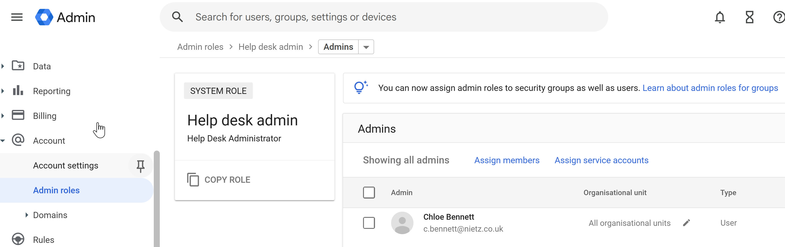
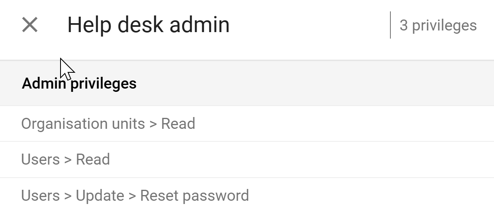
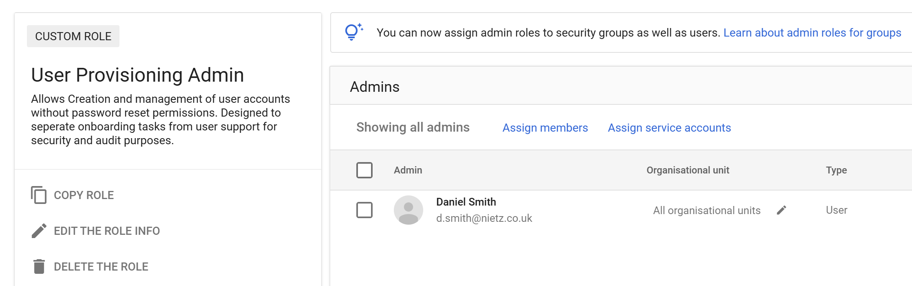

Google Workspace 05: Admin Roles and Delegation
Delegated administration and least-privilege role concepts.
05. Admin Roles & Delegation
Implemented delegated Google Workspace administration using role-based, least-privilege access.
The objective is to distribute administrative responsibilities securely while maintaining control through the principle of least privilege.
Purpose of Admin Roles
Administrative roles were used to:
Delegate responsibilities without granting full access
Reduce security risk by limiting high-level permissions
Support scalable management as the organisation grows
This follows a Role-Based Access Control (RBAC) model.
Admin Roles Overview

Google Workspace provides predefined system roles such as:
Super Admin
Help Desk Admin
Groups Admin
Reports Admin
These roles allow granular delegation of administrative tasks.
Role Assignment

Administrative roles were assigned to users based on their responsibilities.
This ensures:
Only authorised users can perform administrative actions
Responsibilities are clearly defined
Full administrative access is restricted
Helpdesk Role (Least Privilege Example)

The Help Desk Admin role was used to support users while limiting access.
Permissions include:
View organisational units
View users
Reset passwords
This allows support staff to assist users without exposing sensitive configuration settings.
Super Admin Control

The Super Admin role provides full control over the environment.
Best practices applied:
Assigned to a minimal number of trusted users
Used only for high-level configuration and oversight
Not used for daily operational tasks
This reduces risk of:
Accidental misconfiguration
Privilege abuse
Security compromise
Custom Role (Advanced Delegation)

A custom role was created:
User Provisioning Admin
Purpose:
Manage user creation and updates
Handle onboarding tasks
Exclude password reset permissions
This separates:
Account provisioning
User support (handled by Helpdesk)
Custom Role Assignment

The custom role was assigned to a designated user.
This ensures:
Clear separation of duties
Reduced risk of privilege overlap
Better auditability of actions
Delegation Model
Administrative access was structured as follows:
- Super Admins
- Full control
- Limited to trusted users only
- Helpdesk Admins
- User support (password resets, viewing users)
- No access to sensitive settings
- User Provisioning Admin
- Create/manage accounts
- No password reset capability
Security Design
This implementation enforces:
Principle of least privilege
Separation of duties
Reduced attack surface
Controlled access to sensitive functions
Integration with Groups (From Section 04)
Admin roles can also be assigned to groups, enabling:
Centralised role management
Easier scaling as users join/leave
Consistent permission assignment
This aligns with the RBAC model implemented using Google Groups.
Summary
Evidence covered:
Delegation of administrative responsibilities
Use of predefined and custom admin roles
Implementation of least privilege principles
Separation of high-risk and operational tasks
The result is a secure, scalable, and enterprise-ready administrative model.